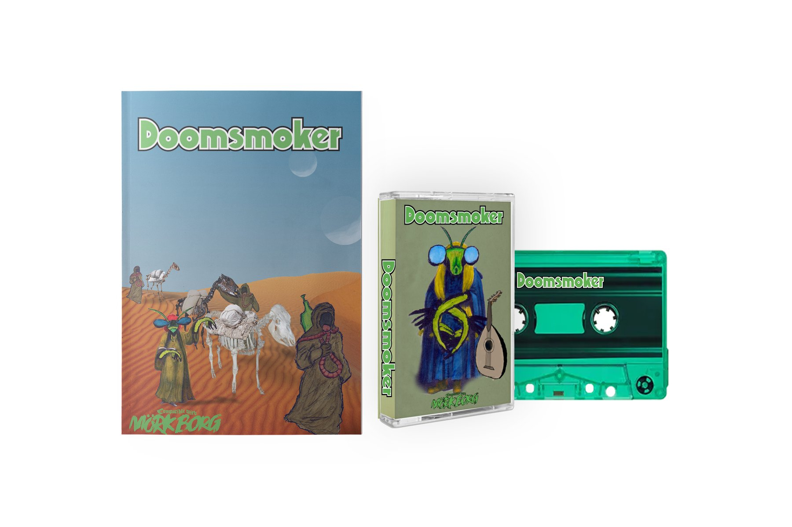
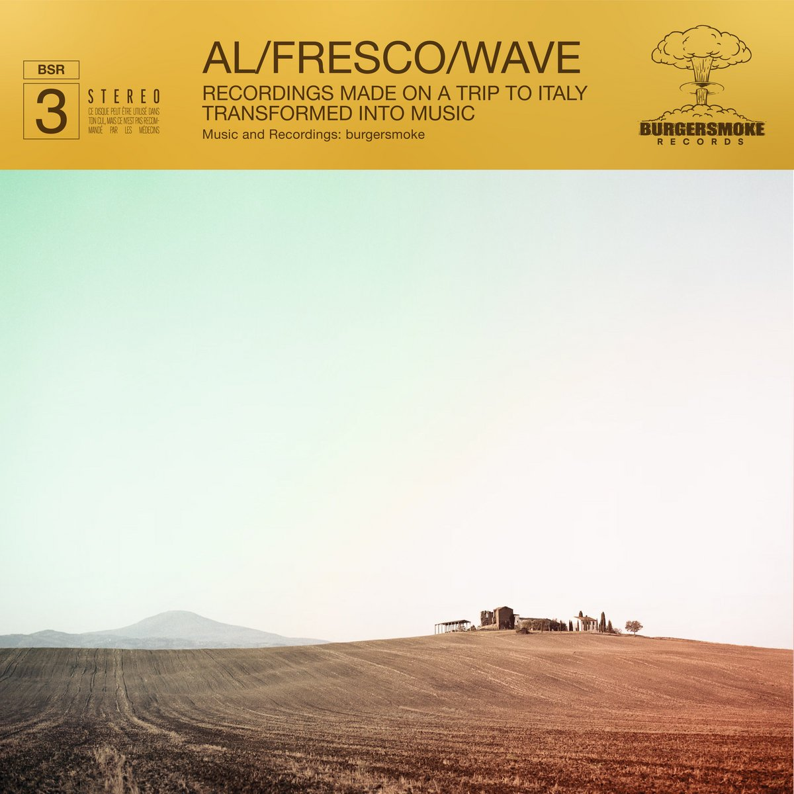
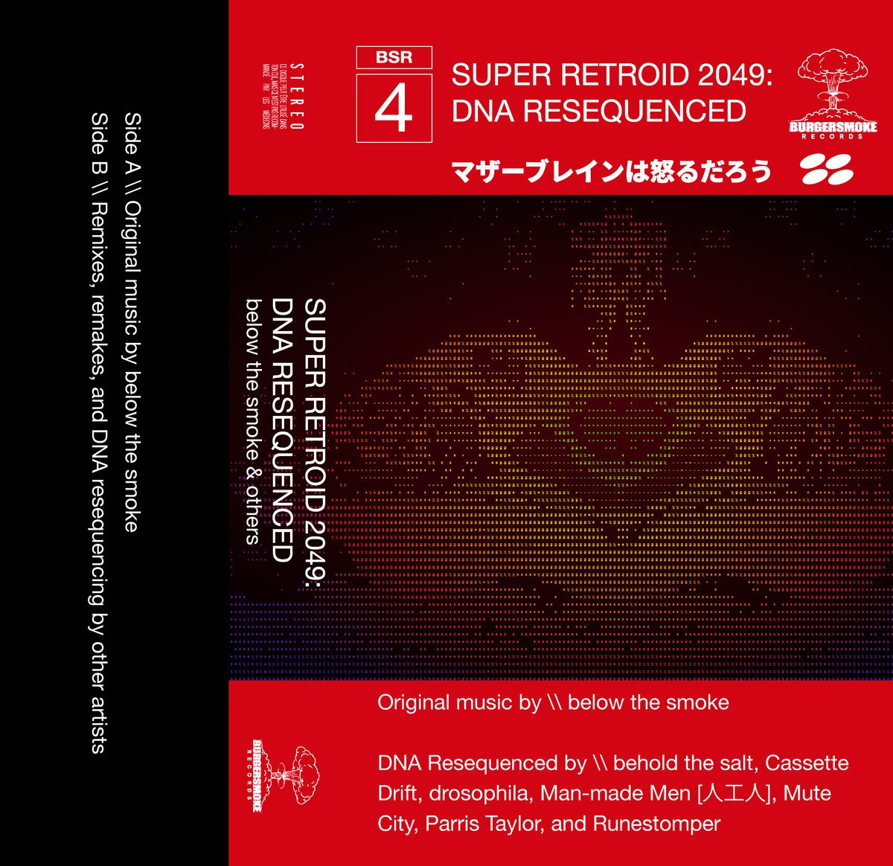
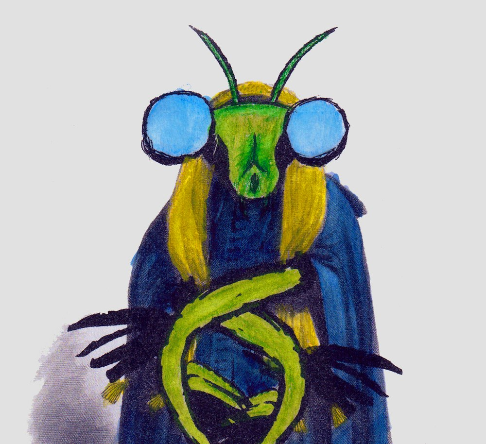
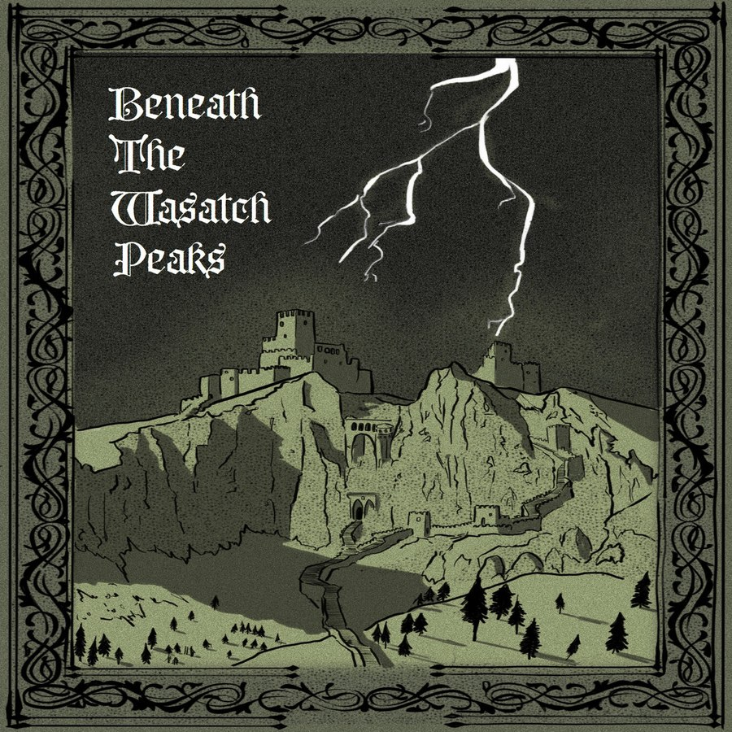
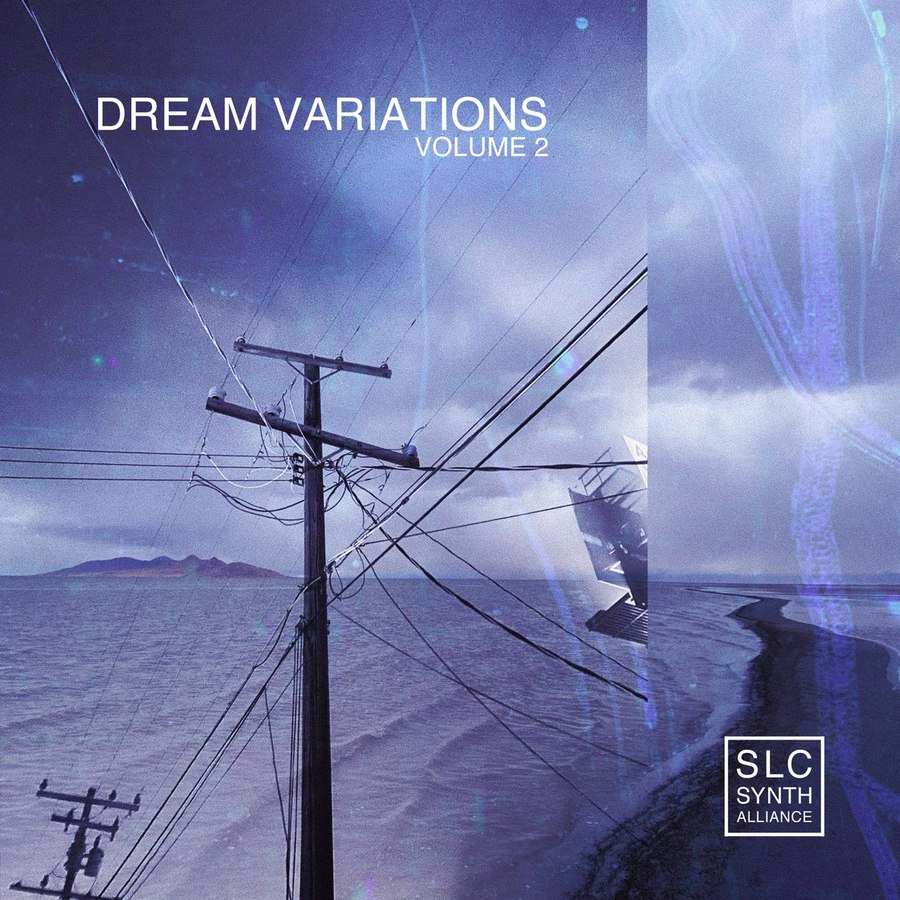

> featured

Doomsmoker is a MÖRK BORG adventure of the sacred smoke covenant delivering sacred herb bales to the Dying Lands from Nazareth to Jerusalem during an impending apocalypse. This adventure has also been blessed with an original soundtrack (80 min, 11 tracks, 7 artists) on tape and digital.

Main music project for burgersmoke — ranging from a story album for a warrior Viking cat, to Beethoven, to Castlevania, to music from field recordings.
bandcamp
Side project of two good friends, burgersmoke and belowthesalt. Most recent release is SUPER RETROID 2049: DNA Resequenced, a love letter to Metroid and the music of the game — the deluxe reissue includes Side A, the original album, and Side B, remixes and reimaginings from other artists.
bandcamp
Besides Doomsmoker, burgersmoke has released other writings, assets, and more on itch.io and DriveThruRPG.


Check out other music compilations for which burgersmoke has contributed tracks.